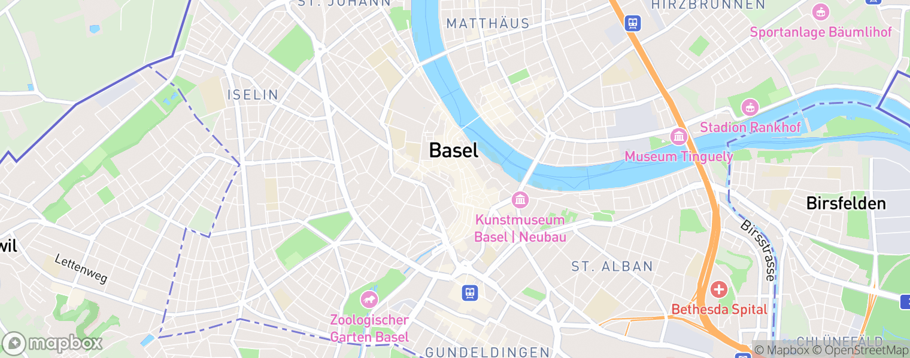

Dropped the loud styles and the dated teardrop pin. Base is a quieter, desaturated map; the salons are marked with clean custom dots (and, as an option, small circular photos) with a frosted count chip. Every marker sits at the real projected location of the 20 Basel salons, not a random spot.

20 Salons in Basel Karte öffnenClean dots. Small ink circles with a white ring , the standard modern-map marker. Quiet, legible at 20 pins, no teardrop. The map is desaturated so it feels premium, not loud.
Photo pins. A few salons show as small circular photos, the rest stay dots. Premium and very on-brand for a photo-forward app, but busier , best if we cap it at 3 to 4 featured.
Blue dots. Same dots in the brand blue. A touch more colour and ties to the accent, but blue is meant to stay a rare clickable accent, so 20 of them may be too much.
Base = real pinless api.mapbox.com Basel tile, desaturated in CSS. Markers = custom HTML at the real projected coordinates of the 20 salons. Production would use mapbox-gl (already a dependency) with these custom markers instead of the static teardrop. Self-hosted, no CDN.